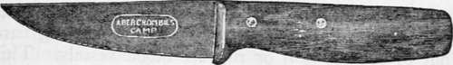
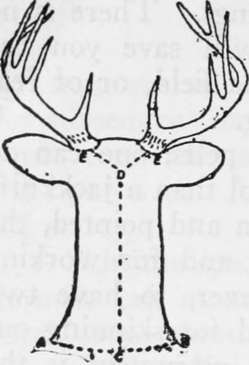

Chapter XVII. Trophies. Pelts, Buckskin And Rawhide
Description
This section is from the book "Camping And Woodcraft", by Horace Kephart. Also available from Amazon: Camping and Woodcraft.
Chapter XVII. Trophies. Pelts, Buckskin And Rawhide
The preparation of game heads, or of entire skins, for subsequent mounting or tanning is not very difficult, even for an amateur, if one goes about it in the right way. A few simple rules may be given at the start:
1. Skin the specimen in such a way that the taxidermist can mount it in lifelike attitude and natural proportions. Make as few incisions as need be, and these in places where the seams will not show.
2. Remove every bit of fat, flesh and cartilage that you can. This is very important, but be careful not to cut through the skin.
3. Dry thoroughly in the shade; not in the sun nor before a fire.
4. Furred pelts are dried on stretchers, but specimens to be mounted by a taxidermist must not be stretched at all.
5. Pelts are to be dried without salt or other preservative, except under conditions mentioned below. Heads are best dried in the same way, unless the weather is damp, or you are collecting in a warm climate.
Many a fine head has been spoiled by not leaving enough of the neck skin attached to give it a good poise in mounting. Many more are ruined by skimped or boggled work about the eyes, lips, and ears, or by leaving fat on the skin so that it gets "grease-burnt," or by rolling up the skin and leaving it in a warm or moist place until decay sets in.
Remember that the taxidermist or furrier must soak the skin to soften it before he can do anything else with it, and if it has been allowed to decay at all the hair will come out when soaked.
To make a good job of skinning is somewhat tedious, and to make buckskin or tan pelts calls for plenty of elbow-grease. Amateurs are apt to be taken in by humbugs who profess to teach quick and easy ways of doing these things. There is no nostrum nor hocus-pocus that will save you the trouble of good knife work in the field, or of real labor if you do your own tanning.
In skinning out heads, or full pelts, one can do nretty fair work with no other tool than a jackknife. with two blades, one of them thin and pointed, the other thicker edged for scraping and for working close to bones. It is best, however, to have two knives. For making incisions and for skinning out the more delicate parts a good instrument is the taxidermist's knife shown in Fig. 181. It has a thin three-inch blade that takes a keen edge, weighs but two ounces, and costs 35 cents. Then have at hand a jackknife or a small hunting knife 'or the rougher work. You will need a whetstone as skinning is hard on knife edges. When slitting a skin, use point of small blade, edge up, so you do not have to cut the hair.
Fig. 181. Taxidermist's knife.
When heads are to be skinned for mounting, one ought to have a pocket tape measure and make notes of actual dimensions on the animal itself. Since trappers and hunters of big game are afield only in cold weather, there is no need of arsenical soap or other chemical preservatives.
Skinning A Head
Begin at a point over the backbone, close to the shoulder, and run the point of the small knife, just under the skin, down to the throat, then down the other side in the same way {AB in Fig. 182). Make these cuts close to the body where the swell of the shoulders and brisket begins, as the skin of the whole neck is needed to mount the trophy true to life. Then from C run the knife straight up the back of the neck to Dj midway between the ears. From D make incisions to EE at the bases of the two antlers. (If the animal has no antlers or horns, then the cut from C to D is sufficient).
Now begin to peel off the skin, working first from C down on each side. Pull away the skin with one hand while you assist with the knife in the other, cutting off the little ligaments as you go, so as to leave no flesh adhering to the skin, taking care not to cut the skin or rupture blood vessels. This kind of work is not to be done by a few heavy strokes, but by many light ones, holding the knife like a pencil. Peel forward to base of ears, and cut these off close to the skull. Then take up the V-shaped point between the ears (D) and skin off the scalp. Cut and pry the skin away from the base of each antler (EE) all around, working carefully and close to the base so as not to haggle edge of skin or leave hairs attached to antlers. It will help here to insert under the skin a small wedge-shaped stick, and pound a little on it.
Just above each eye is a depression in the skull, with no flesh between skin and bone, and the skin adheres tightly. Go slow here, cutting loose the skin to the very bottom of the cavities.
Fig. 182. Skinning a head.
About the eyes you must proceed with great care, for if you cut the eyelids they cannot repaired so as not to show the fault. Keep the blade close to bony rim of eye socket. Insert a finger into eye as guide, and cut through the membrane over the eye without puncturing the eyeball. Free corners of the eyelids from the bone by neat work with the knife.
Pull off the skin as far as the nostrils and mouth. Here again you must work slowly and carefully Sever the cartilage of the nose well back of the open ing so the cut will not show from the front when head is mounted. When the lips are reached, cut close to the bone all around.
The skin being free from the skull, now proceed to remove the cartilage from the ears, so the taxidermist can insert metal forms that will preserve the natural contours. Many leave the cartilage in place, in ears, nose, and lips; but if this is done the parts will shrink and shrivel, besides being good prey for insects. Begin at the base of the back oi the ear, separate the cartilage as far as you can with the knife, then start to turn the ear inside out, peeling as you go. Continue until you reach the point of the ear. Your wedge-shaped stick will come handy here. Having finished the back, then skin down the inside in the same wray. Be careful not to cut the skin at the edge. Thus remove each cartilage entire.
Continue to:
- prev: Knots, Hitches, And Lashings. Part 6
- Table of Contents
- next: Trophies. Pelts, Buckskin And Rawhide. Part 2